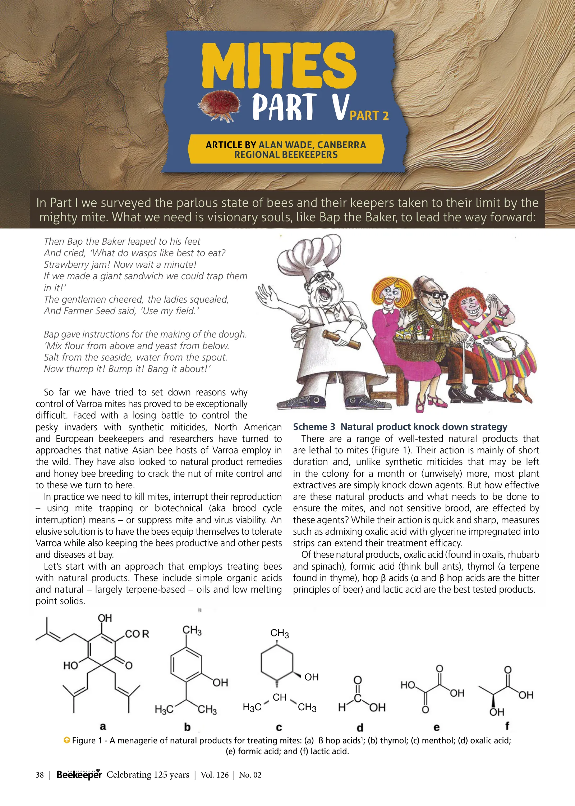

Figure 1 - A menagerie of natural products for treating mites: (a) ß hop acids1; (b) thymol; (c) menthol; (d) oxalic acid;
(e) formic acid; and (f) lactic acid.
Then Bap the Baker leaped to his feet
And cried, ‘What do wasps like best to eat?
Strawberry jam! Now wait a minute!
If we made a giant sandwich we could trap them
in it!’
The gentlemen cheered, the ladies squealed,
And Farmer Seed said, ‘Use my field.’
Bap gave instructions for the making of the dough.
‘Mix flour from above and yeast from below.
Salt from the seaside, water from the spout.
Now thump it! Bump it! Bang it about!’
So far we have tried to set down reasons why
control of Varroa mites has proved to be exceptionally
difficult. Faced with a losing battle to control the
pesky invaders with synthetic miticides, North American
and European beekeepers and researchers have turned to
approaches that native Asian bee hosts of Varroa employ in
the wild. They have also looked to natural product remedies
and honey bee breeding to crack the nut of mite control and
to these we turn to here.
In practice we need to kill mites, interrupt their reproduction
– using mite trapping or biotechnical (aka brood cycle
interruption) means – or suppress mite and virus viability. An
elusive solution is to have the bees equip themselves to tolerate
Varroa while also keeping the bees productive and other pests
and diseases at bay.
Let’s start with an approach that employs treating bees
with natural products. These include simple organic acids
and natural – largely terpene-based – oils and low melting
point solids.
Scheme 3 Natural product knock down strategy
There are a range of well-tested natural products that
are lethal to mites (Figure 1). Their action is mainly of short
duration and, unlike synthetic miticides that may be left
in the colony for a month or (unwisely) more, most plant
extractives are simply knock down agents. But how effective
are these natural products and what needs to be done to
ensure the mites, and not sensitive brood, are effected by
these agents? While their action is quick and sharp, measures
such as admixing oxalic acid with glycerine impregnated into
strips can extend their treatment efficacy.
Of these natural products, oxalic acid (found in oxalis, rhubarb
and spinach), formic acid (think bull ants), thymol (a terpene
found in thyme), hop β acids (α and β hop acids are the bitter
principles of beer) and lactic acid are the best tested products.
In Part I we surveyed the parlous state of bees and their keepers taken to their limit by the
mighty mite. What we need is visionary souls, like Bap the Baker, to lead the way forward:
ARTICLE BY ALAN WADE, CANBERRA
REGIONAL BEEKEEPERS
PART 2
CH3
H3C
CH3
CH
OH
38 |
Celebrating 125 years | Vol. 126 | No. 02